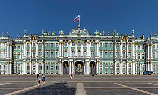

Sankt Peterburg
Jag gillar staden för att allt är på mitt modersmål och basically alla kan mitt språk och det typ är samma ekonomi som i Sverige.
Jag höll på med programmering lite över ett år. Då har jag gjort hemsidor, spel och även databaser...
- Music Production
- Movie Production
- Coding
- Swimming
- Gym